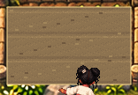
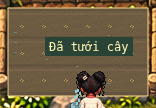
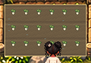
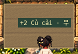
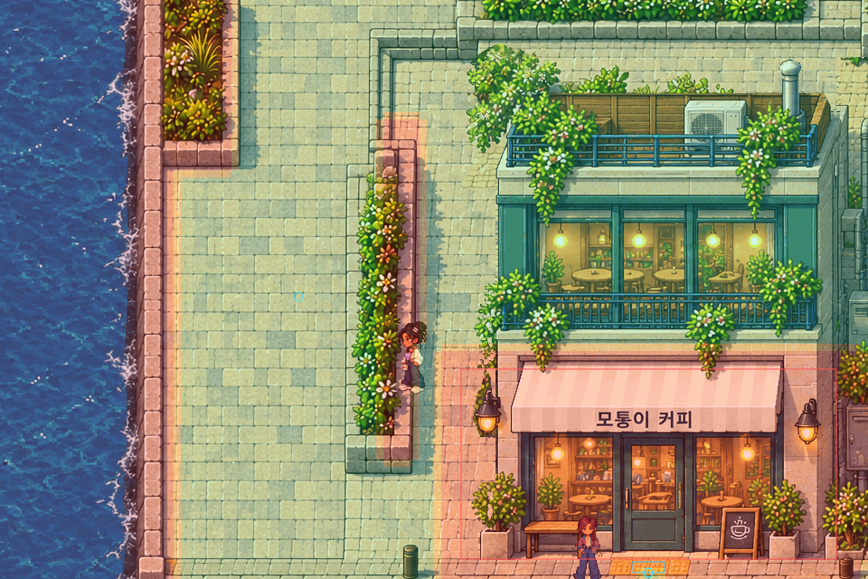

00-empty


26 NPC · 12 nhân vật · 24 cosmetics. Không đổi artwork gốc; thao tác bằng E/chạm tại luống, không có bảng farming từ xa.
Chơi từ khu farm · Chơi từ đầu · QA thực tế · PASS / WARN / NOT TESTED
Ảnh dưới phóng 2× nearest-neighbor để dễ nhìn. Mỗi ảnh có bản native 1:1 riêng.




Kiểm thử riêng có1hạt hành fixture; không tua thời gian. Gieo/tưới/thu hoạch thật trong Phaser.

Phần đá trống: lối23→30px, bồn cây giữ nguyên; không vẽ lại map.
Android/iPhone thật và GPU vật lý: NOT TESTED. Bản thay đổi cần exact manifest exposure gate trước khi phát hành Pages.